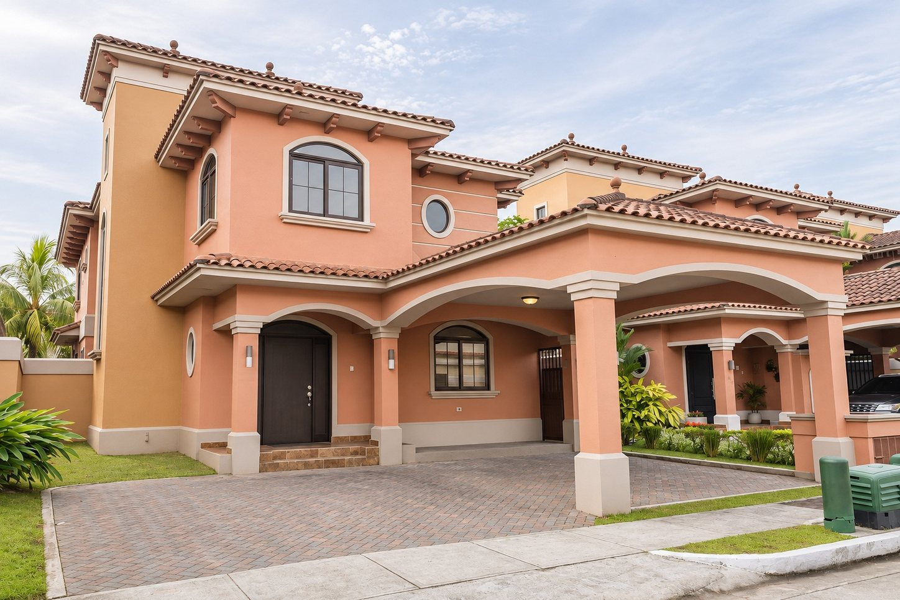

Casa · En venta US$550,000
Casa en El Doral, Costa Sur.
Casa de dos niveles con cuatro recámaras, terraza cerrada y jardín. 345 m² de construcción sobre un terreno de 361 m².
Escríbeme por WhatsAppUS$550,000 Precio
345 m² Construcción
4 Recámaras con baño
3 Estacionamientos
Foto de la fachada de la casa en venta
La casa
Abajo se vive y se recibe; arriba, las recámaras.
En planta baja, sala-comedor, cocina equipada y una habitación que sirve de estudio, gimnasio o cuarto de juegos. La terraza cerrada, con puertas corredizas y parrillera, se abre al jardín posterior. Cuarto y baño de servicio, lavandería y baño de visitas.
Arriba, cuatro recámaras con baño propio y una sala familiar. La principal tiene walk-in clóset y baño con bañera y doble lavamanos. Aires inverter en todas las áreas y dos tanques de reserva de 300 galones. Construcción de 2011.
Fotografías reales de la casa, ajustadas solo en luz y color.
La ficha
Los datos de la casa.
La casa
Servicio y entrega
El residencial
Según la propietaria. Medidas, terreno y equipamiento sujetos a verificación en la visita.
Ubicación
El Doral, en Costa Sur.
Residencial cerrado en Costa Sur, con acceso al Corredor Sur, a unos 10 minutos del Aeropuerto de Tocumen y cerca de United School of Panama.
Preguntas
Lo que más me preguntan.
¿Se vende amoblada?
Semi amoblada y equipada. Según la propietaria, quedan los muebles de la sala familiar, los de la terraza y la mesa de la cocina.
¿Cómo es la distribución?
Abajo, sala-comedor, cocina equipada, una habitación que sirve de estudio o gimnasio, terraza cerrada hacia el jardín, baño de visitas, lavandería y cuarto y baño de servicio. Arriba, cuatro recámaras con baño propio y una sala familiar.
¿Cuántos estacionamientos tiene?
Tres, dos de ellos techados.
¿Qué tiene el residencial?
Garita 24 h con cámaras, piscina de adultos y de niños, cancha de tenis, gimnasio y sauna, salón de usos múltiples y parque infantil.
¿Las fotos están editadas?
Son fotografías reales de la casa, ajustadas solo en luz y color. En la fachada se ocultó el número de la casa.
¿Cuándo se puede visitar?
Con cita, desde el 1 de diciembre. Dime qué día te queda bien, si compras de contado o con financiamiento, y para cuándo.
Conversemos
¿La quieres ver?
Visitas con cita desde el 1 de diciembre. Escríbeme y coordinamos el día.
Dario Jhangimal · Corredor de bienes raíces · PN-1240 · SpotOne Realty